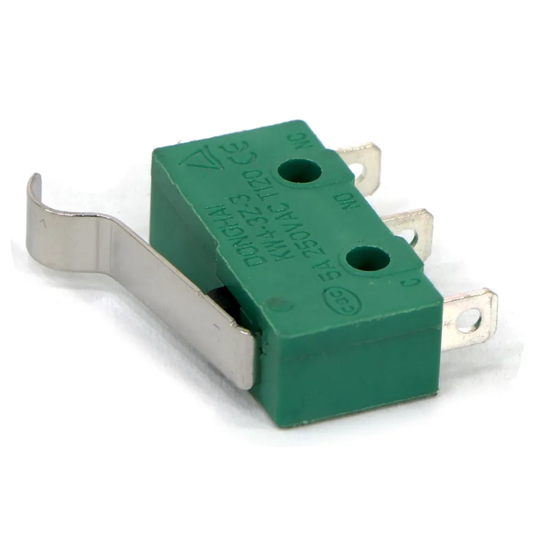

O sensor fim de curso (também chamado de microswitch) é um componente eletromecânico que atua como a "fração de toque" de um sistema automatizado. Ele serve para detectar a presença física, o limite de movimento ou o posicionamento correto de uma parte móvel de uma máquina. Ele é composto por um corpo com contatos elétricos e um atuador mecânico externo (como uma alavanca ou um rolete). Quando a peça móvel da máquina encosta fisicamente nesse atuador, ele se move e altera os contatos elétricos internos, avisando o sistema de que o limite foi atingido.

Os tipos de fim de curso variam conforme o modelo do seu atuador mecânico, adaptando-se ao tipo de impacto que vão receber. Os principais são: com atuador de pino ou pistão (para movimentos lineares retos); com rolete (para peças que passam deslizando por cima dele); com alavanca ajustável (para ajustar o ângulo de toque); e com haste flexível (tipo antena), que pode ser acionado por impactos vindos de qualquer direção.
As aplicações mais comuns no dia a dia incluem o sistema de portões eletrônicos (para o motor saber exatamente quando o portão terminou de abrir ou fechar), a segurança de elevadores (para garantir que a cabine só se mova com a porta fechada) e o controle de pontes rolantes e esteiras industriais.